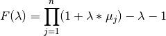

Utilities module¶
Contents:
Created on Thu Jul 30 18:33:36 2020
@author: asier
-
utils.F(l, mu)¶ .
-
utils.Fprime(l, mu)¶ .
-
utils.bintofloat(x)¶ float in 0-1 range
-
utils.bisectionLien(F, W, epsilon=1e-06)¶ Simple algorithm for identifying λ-value for fuzzy measures and fuzzy integrals (Chung-Chang Lien & Chie-Bein Chen)
https://doi.org/10.1080/09720510.2007.10701271
- Parameters
F – F(lambda)
W – fuzzy measure
epsilon – precision for te aproximation to F(lambda) = 0
- Return type
lambda that makes F(lambda)=0 with given measure
-
utils.bisectionWang(F, DF, W, epsilon=1e-06)¶ J. C. Wang, T. Y. Chen and H. M. Shen, Using fuzzy densities to determine the λ -value for λ -fuzzy measures, in 9th National Conference on Fuzzy Theory and its Applications, 2001, pp. 54–59.
- Parameters
F – F(lambda)
DF – F’(lambda)
W – fuzzy measure
epsilon – precision for te aproximation to
- Return type
lambda that makes with given measure
-
utils.generateGMeasure(mu, l)¶ Generates fuzzy densities given
only needed are calculated, given that the measure is sorted to calculate the fuzzy integral
.
.
-
utils.individualtofloat(x, precision=10)¶